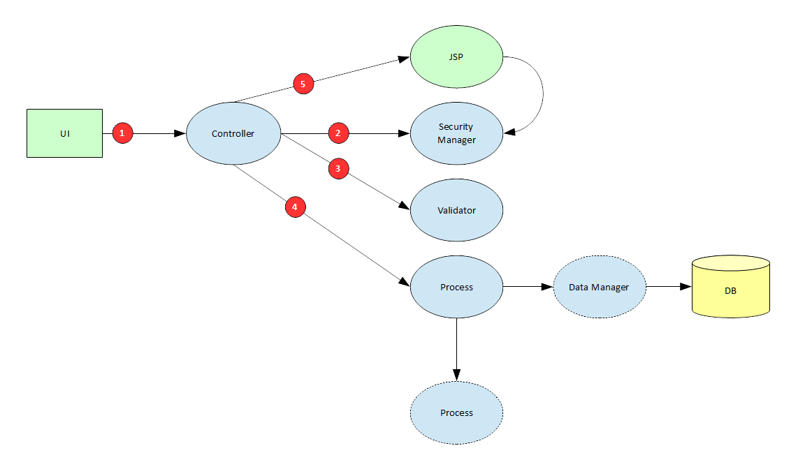

Request Processing (MVC)
The JDistil framework uses a simple MVC model for request processing. This model is built around a central controller that delegates
authentication and authorization to a pluggable security manager, page and field validation to a pluggable validator, and request processing
to an action specific application process. The controller is also responsible for forwarding the request to a process specified JSP page for
UI presentation. The next section provides more detailed information using a component interaction diagram.
Diagram
The following diagram documents all component interactions involved in request processing. Descriptions of each interaction are listed below the diagram.

| Step | Description |
|---|---|
| 1 | Request specifying an application specific action. |
| 2 | Authentication and authorization verified for submitted action using pluggable security manager. |
| 3 |
Data validation performed for submitted action using pluggable validator. Checks required fields, value formats, custom conditions, etc. |
| 4 |
Controller creates a process context and invokes an action specific process. Process can leverage data manager implementations to access and manipulate data. Process can forward processing to other application defined processes. Process can specify a target page in the process context or write to the response directly. |
| 5 |
Controller forwards the request to a page specified by the process if response has not already been written to directly. JSP page uses the pluggable security manager to identify field and action authorizations when building the UI. |